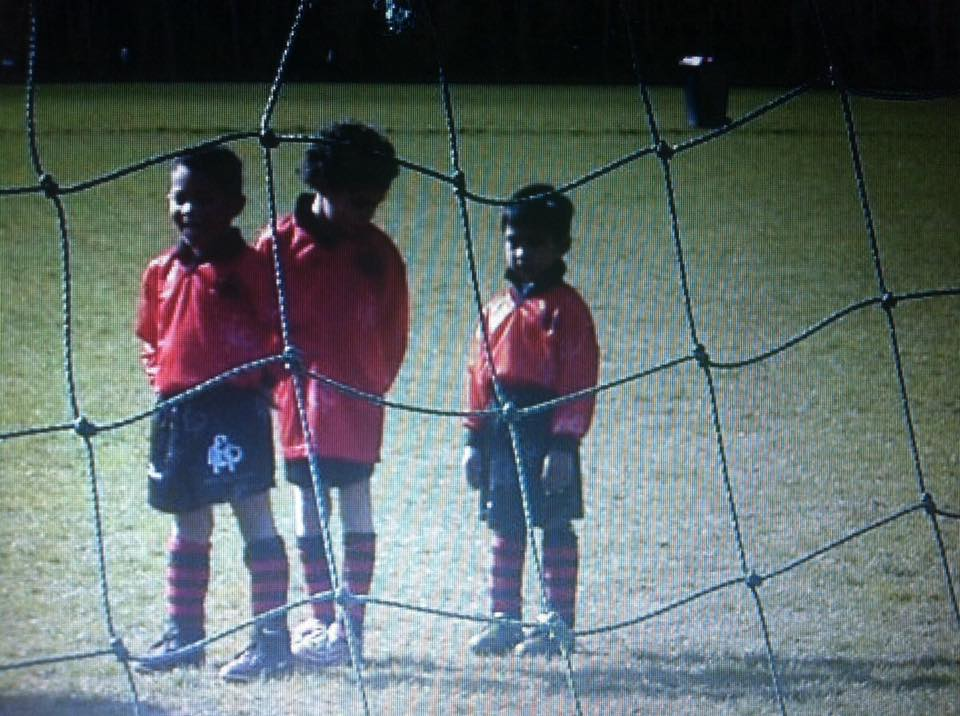
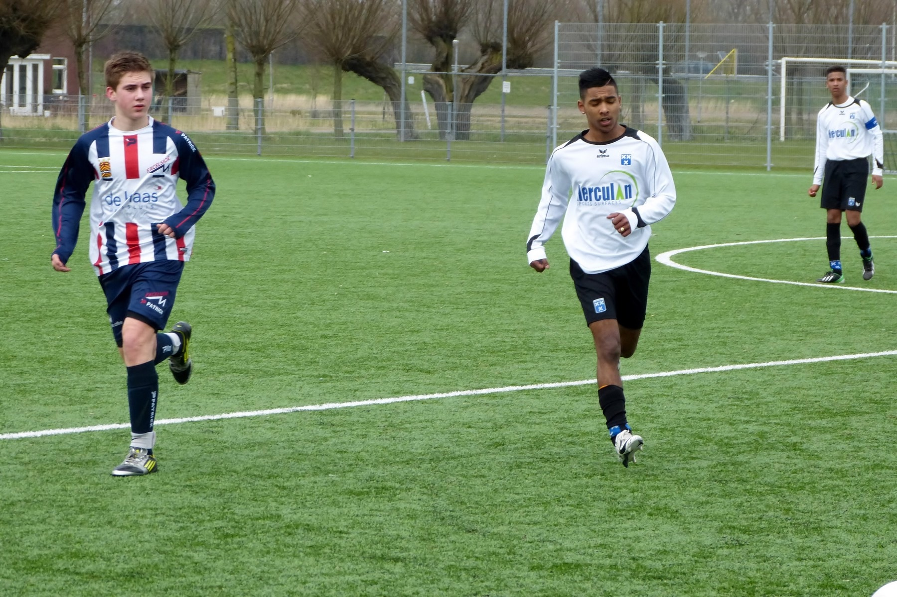
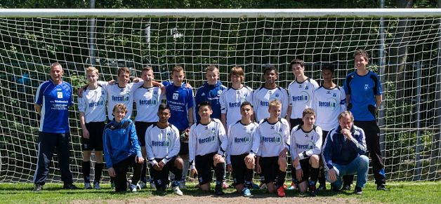

 Ik begon met voetballen op EBOH.Daar zat ik denk ik ongeveer 2 jaar op en ik was 5/6 jaar toen ik begon.Ik begon bij de Kabouters mijn trainder was Wendy. van de Kabouters ging ik naar de E'tjes na een half jaar in de E'tjes was ik gestopt met voetballen voor een jaartje.
Toen ik van EBOH af ging, ging ik na een jaartje op V.V.Wieldrecht.Omdat mijn vrienden daar ook op zaten wou ik heel graag bij hun in de team, maar dat kon helaas niet gelijk.Ik begon in de E7 ik was heel laag ingedeeld voor mij was het supermakkelijk ,daarna ging ik naar de E5. allebei de seizoenen was ik in de top 3 geëindigt. van de E'tjes ging k naar de D2 ik werd wat hoger geselecteerd.Het eerste jaar in de D2 was goed maar in het 2e jaar van de D2 werd ik gekozen als aanvoerder.Toen ik van de D'tjes naar de C'tjes ging mocht ik C1 gaan spelen en dat was ook gelijk bij mijn vrienden en dat is wat ik wou. We waren in de top3 geëindigt in het eerste jaar maar in de 2e jaar waren wij kampioen hier een foto-album van dat jaar.
C1 was een goed seizoen voor ons we hebben veel meegemaakt veel plezier gemaakt met elkaar.We hadden ook een toernooi dat hadden de trainers geregeld, dat was helemaal in Denemarken.Daar gingen we heen met de bus het was 12uurtjes reizen.In Denenmarken sliepen we in een soort school.We waren heel ver gekomen dat we eigenlijk wel die beker moesten krijgen maar die laatste wedstrijd was vermoeiend.Ik was de laatste 2 dagen erg ziek geworden dus toen kom ik ook helemaal niks,maar heb wel gewoon door gespeeld.Uiteidelijk waren we dus tweede geworden in Denemarken en zijn we toch nog met een prijsje naar huis gegaan.het team wat we hadden was een zeer sterke team we waren bijna ongeslagen.In het seizoen hadden we 2 keertjes verloren en derest hadden we allemaal gewonnen, hier meer info over het team van C1 Wieldrwecht/C1/2014
Voetbal is iets wat ik heel graag doe ik vind het heel leuk ik kan er ook wel wat van en heb er altijd plezier in.Ik voetbal graag met vrienden dat is gezellig soms ga ik wel eens met een groepje naar buiten om te voetballen op het einde waord er 1 iemand afgeknalt degene die heeft verloren dus,ook dagen we andere mensen uit voor een partij.Dit zijn dus mijn hobby's dit is wat ik graag doe in me vrije tijd.